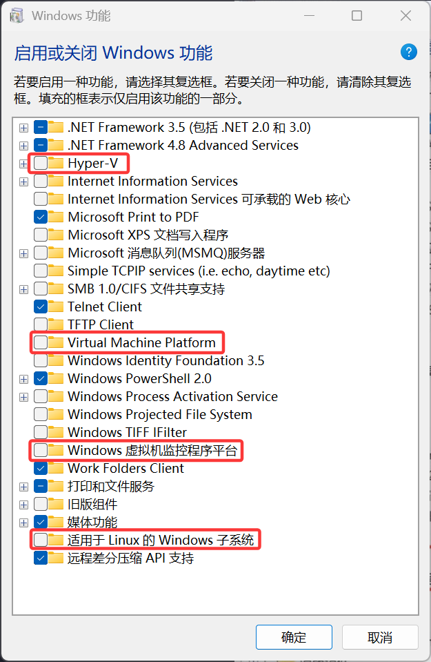
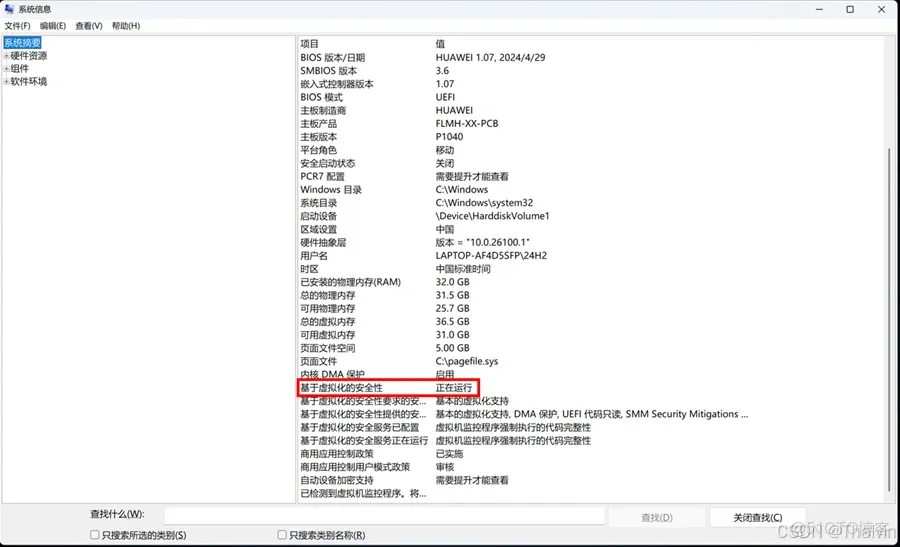

VMware此平台不支持虚拟化的“amd-v/rvi”的解决方法
问题
在vmware中安装使用eveng发现报错此平台不支持虚拟化的“amd-v/rvi”，
解决方法 1
上网搜了一下发现是hyper-v与vmware冲突导致，需要将与其相关的功能关闭。
关闭如下图所示功能：
关闭内存完整性
打开 Windows 安全中心 -> 设备安全性 -> 内核隔离 -> 内核隔离详细信息，然后将内存完整性关闭。
解决方法 2
但是错误并没有解决，继续搜索发现如下解决办法：
Win11 24H2镜像出货的机型会默认打开“Virtualization-based Security（VBS）基于虚拟化的安全性”功能，此功能打开可能会导致部分游戏性能下降卡顿等情况，查看设备是否开启了VBS，
Win+R呼出运行框，输入msinfo32查看VBS的运行状态，我的已经关闭了，网图如下：
执行bat脚本，关闭基于虚拟化的安全性。具体脚本内容如下：
1
2
3
4
5
6
7
8
9
10
11
12
13
14
15
16
17
18
19
20
21
22
23
24
25
26
27
28
29@echo off
dism /Online /Disable-Feature:microsoft-hyper-v-all /NoRestart
dism /Online /Disable-Feature:IsolatedUserMode /NoRestart
dism /Online /Disable-Feature:Microsoft-Hyper-V-Hypervisor /NoRestart
dism /Online /Disable-Feature:Microsoft-Hyper-V-Online /NoRestart
dism /Online /Disable-Feature:HypervisorPlatform /NoRestart
REM ===========================================
mountvol X: /s
copy %WINDIR%\System32\SecConfig.efi X:\EFI\Microsoft\Boot\SecConfig.efi /Y
bcdedit /create {0cb3b571-2f2e-4343-a879-d86a476d7215} /d "DebugTool" /application osloader
bcdedit /set {0cb3b571-2f2e-4343-a879-d86a476d7215} path "\EFI\Microsoft\Boot\SecConfig.efi"
bcdedit /set {bootmgr} bootsequence {0cb3b571-2f2e-4343-a879-d86a476d7215}
bcdedit /set {0cb3b571-2f2e-4343-a879-d86a476d7215} loadoptions DISABLE-LSA-ISO,DISABLE-VBS
bcdedit /set {0cb3b571-2f2e-4343-a879-d86a476d7215} device partition=X:
mountvol X: /d
bcdedit /set hypervisorlaunchtype off
echo.
echo.
echo.
echo.
echo =======================================================
echo 当前操作已完成，接下来请关闭此窗口并重启电脑，然后根据屏幕提示完成剩下操作。
pause > nul
echo.
echo.将文本保存为
.bat格式的文件，右键管理员权限运行，等待设备重启之后，按四次F3，即可关闭。重新打开虚拟机，设备正常。
参考文章
VMware此平台不支持虚拟化的“amd-v/rvi”的解决方法
https://1zqqx.github.io/2025/08/10/VMware此平台不支持虚拟化的“amd-v-rvi”的解决方法/